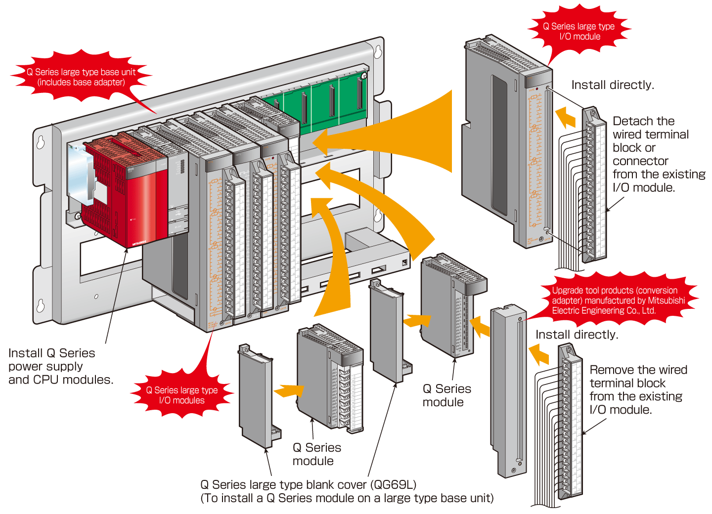

Programmable Controllers MELSEC-A Series Renewal

Utilize the existing 32-point wiring I/O module with Q Series
Q Series Large Type Base Unit, I/O Module
Supported series: 
Upgrade to Q Series with the existing 32-point I/O wiring
Minimize wiring modifications by utilizing the existing A Series 32-point I/O wiring.
No need to make new installation holes. The hole size and pitch of the Q Series large type base units are the same as those of A/QnA Series.

- The Q Series power supply and CPU modules can be used without any modification (The Q Series large type blank cover is not necessary).
- The Q Series large type I/O modules can be used with the Q Series modules. (Some modules, such as the ones that occupy two slots, cannot be installed. For details, please refer to Q Series Large Type Base Unit User's Manual (IB-0800408).)
Notes
- Through the use of upgrade tool products (manufactured by Mitsubishi Electric Engineering Co., Ltd., refer to A/Q Upgrade Tool Products), terminal block modules that are not compatible with the Q Series large type I/O modules can be installed without rewiring.
- For compatibility of the Q Series large type base unit and upgrade tool products, refer to "Compatibility of Q Series large type base unit and Upgrade Tool Products".
Q Series large type base units
| Type | Model | Outline |
|---|---|---|
| Main base unit | Q38BL | 8 slots, 1 power supply module required, Q Series large type I/O module supported |
| Q35BL | 5 slots, 1 power supply module required, Q Series large type I/O module supported |
|
| Extension base unit | Q68BL | 8 slots, 1 power supply module required, Q Series large type I/O module supported |
| Q65BL | 5 slots, 1 power supply module required, Q Series large type I/O module supported |
|
| Q55BL | 5 slots, power supply module not required, Q Series large type I/O module supported |
Q Series large type I/O modules
| Type | Model | Outline | |
|---|---|---|---|
| Existing A Series module | Q Series large type module | ||
| Input module | AX11 | QX11L | 32 points; 100 to 120 V AC; rated input current: 10 mA (100 V AC, 60 Hz); response time: 15 ms or less (OFF to ON), 25 ms or less (ON to OFF); 32 points/common; 38-point terminal block |
| AX21 | QX21L | 32 points; 200 to 240 V AC input; rated input current: 10 mA (220 V AC, 60 Hz); response time: 15 ms or less (OFF to ON), 25 ms or less (ON to OFF); 32 points/common; 38-point terminal block |
|
| Output module | AY10A AY11A |
QY11AL | 16-point contact output, 24 V DC/240 V AC, 2 A/point, 16 A/all points, all points independent, 38-point terminal block, surge suppressor (varistor 387 to 473 V) |
| AY13 | QY13L | 32-point contact output, 24 V DC/240 V AC, 2 A/point, 5 A/common, 8 points/common, 38-point terminal block |
|
| AY23 | QY23L | 32-point triac output, 100 to 240 V AC, 0.6 A/point, 2.4 A/common, 8 points/common, 38-point terminal block |
|
| AY51 AY51-S1 |
QY51PL | 32-point transistor output (Sink), 12/24 V DC, 0.5 A/point, 4 A/common, 16 points/common, 38-point terminal block |
|
| Q Series large type blank cover | - | QG69L | Blank cover for installing the existing Q Series module on the Q Series large type base unit |
Notes
- The Q Series large type base units and I/O modules are compatible with the Universal model QCPUs*1 (including the High-speed Universal model QCPUs), and the MELSECNET/H remote I/O stations.
The following CPUs and system are not compatible:- Process CPUs, redundant CPUs, and safety CPUs
- Q00UJCPU
*1.The Universal model QCPU, whose first 5-digit serial number is 13102 or later, is compatible